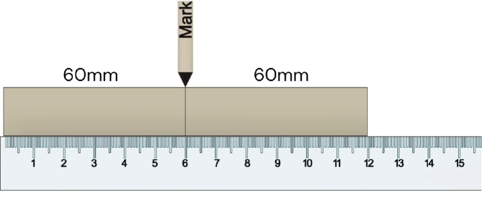
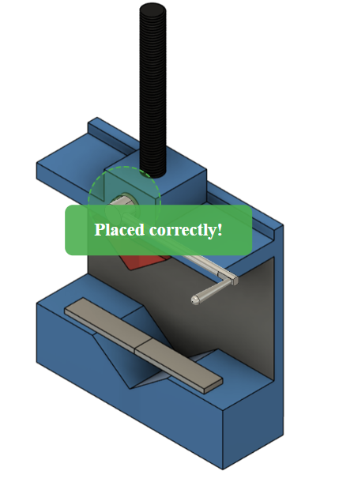
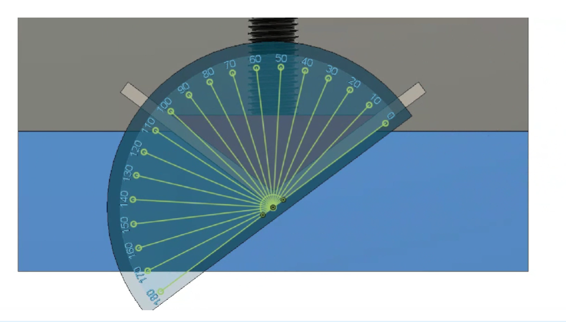
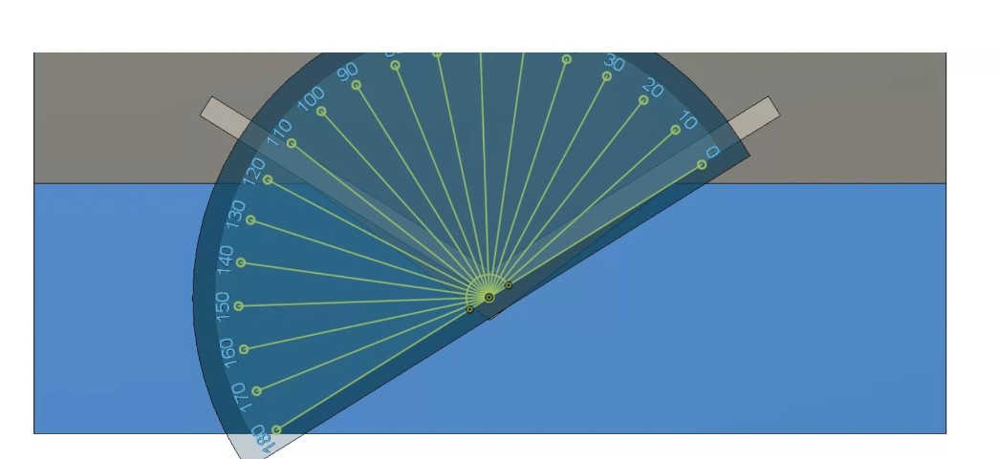

Procedure
- Material and thickness selection: The simulation interface displays material selection cards for Aluminium, Brass, and Stainless Steel. For each material, two thickness options are provided: 2 mm and 5 mm. The user selects Stainless Steel with the required thickness, and the selection is confirmed through the green status bar displayed at the bottom of the screen.
- Viewing the schematic diagram: The schematic diagram of the selected metal strip is displayed, showing the top view and side view with proper dimensions. This step helps the user understand the geometry and thickness of the specimen before proceeding further.
- Marking the center of the specimen: The center of the metal strip is marked using a measuring scale. Equal distances of 60 mm are measured from both ends to locate the midpoint, which will be used as the reference point for bending.
- Placing the workpiece on the die: The apparatus with the V-shaped lower die is visible, and the rectangular metal workpiece is shown to the right. A yellow dotted circular region is marked on the die, instructing the user to drag the workpiece into this highlighted zone to position it correctly for bending.
- Workpiece positioned correctly: The workpiece has been dragged onto the apparatus and now lies across the V-shaped lower die within the green dotted circular area. A “Placed correctly!” message appears above the setup, indicating that the workpiece is in the correct location and the user can proceed.
- Attaching the handle to the screw: The upper part of the press with the vertical screw is shown, and the L‑shaped handle is displayed separately on the right side. A yellow dotted circular region is highlighted around the screw head, instructing the user to drag the handle so that its hinge aligns with this point to assemble the press.
- Handle attached successfully: The handle has been dragged and snapped onto the screw head, forming the complete lever mechanism for operating the press. A “Placed correctly!” message confirms that the handle is assembled properly and the simulation is ready for the bending operation.
- Starting the bending operation: The complete press with the mounted workpiece and handle is shown. A red circular highlight surrounds the free end of the handle, indicating that the user should click this handle to initiate the downward movement of the punch and start bending the metal strip.
- Measuring bend angle before release: The view switches to a large protractor overlapped by the bent workpiece. The protractor reading is 106°, and the text below states Measurement on protractor: 106° and Bend angle before release: 180° − 106° = 74°, meaning the workpiece has been bent to a 74° internal angle while the punch is still pressing it.
- Removing the punch to observe spring-back: The apparatus view returns, showing the punch still in contact with the bent workpiece. A red circular highlight surrounds the handle again, instructing the user to click the handle to move the punch back up, remove the load, and observe how the angle of the workpiece changes due to spring‑back.
- Final bend angle and spring-back: The protractor view appears again with the relaxed workpiece. The protractor now reads 116°, and the text below shows Measurement on protractor: 116°, Final bend angle after release: 180° − 116° = 64°, and Spring-back angle = 74° − 64° = 10°, indicating that after unloading, the workpiece opened up by 10° (spring‑back).








